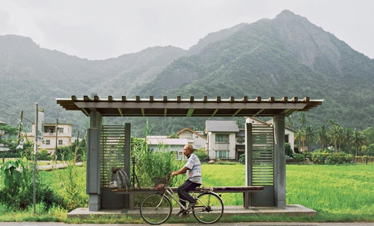

在田中央
：人與地景的，柔軟共生

讓雨的孩子，保留了聽雨、賞雨的自在心情
保留下的施工便橋，成為市民與河更靠近的日常，沿著河往社區走入，建築與環境被和諧的連結起


在田中央 │ 有關這本書
我們按圖索驥看這些「田中央」作品，不用管桁架、耐候性鋼板、格柵、洗石子、Mock-up、公共性那些語彙，就是用心體會風、光、水與建築的交融，接著再多看一點建築的細節。
走訪的同時再讀起書中的記錄章節，如何設計出這座河畔合一的棧道，從概念發想到實體建物，透過閱讀和實地探訪，探索建築的另類樣貌。
他們回歸人類的觀點觀看，找出丟失的東西。敞開心胸，和宜蘭的地景連接。
在田中央選擇長期定居在宜蘭過活與工作，這群建築師同時是居民以及專業者；二十多年來蔓生而出一大片開放的、從小步道至大橋樑的公共建築群。
「把這裡當作家園，能做什麼就做什麼，暫時做不到的就放在心裡等待，能做也要故意留下一些空白。」—黃聲遠
這次要讀的路線
從宜蘭城內的巷弄，經過楊士芳紀念林園，穿過光大巷、社福館，踏上西堤屋橋，一路散步到河濱，接著穿越津梅棧道，與粼粼波光靜默。
